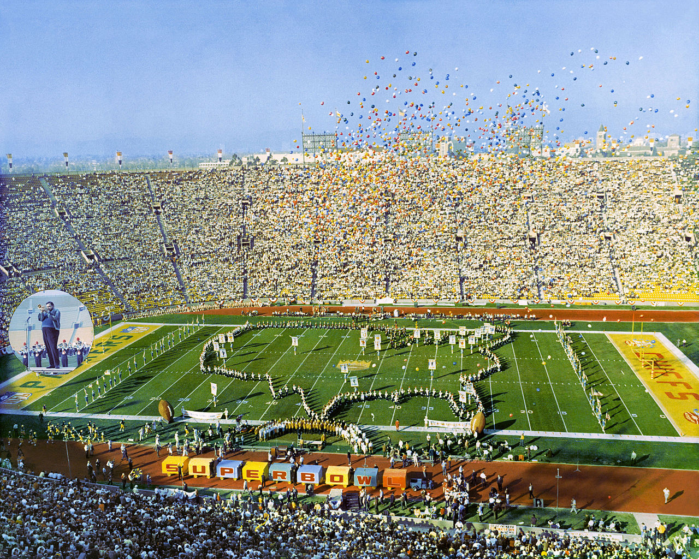

The Packers and the Chiefs in the first AFL–NFL Championship Game (Super Bowl I)
Summary | Score
The first AFL-NFL World Championship Game in professional American football, known retroactively as Super Bowl I and referred to in some contemporaneous reports, including the game's radio broadcast, as the Super Bowl, was played on January 15, 1967 at the Los Angeles Memorial Coliseum in Los Angeles, California. The National Football League (NFL) champion Green Bay Packers defeated the American Football League (AFL) champion Kansas City Chiefs by the score of 35–10.
The Packers and the Chiefs in the first AFL–NFL Championship Game (Super Bowl I)
Super Bowl I took place at the Los Angeles Coliseum.
